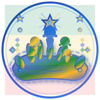
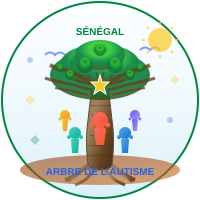

🧩 Logos Autisme Sénégal
Trois propositions inspirées du contexte africain et des symboles de solidarité

Version 1: Solidarité Africaine
Inspiré du concept de main protectrice et des couleurs vibrantes africaines. Met l'accent sur la protection et l'accompagnement des enfants autistes.
- Main protectrice en arc multicouleur
- Figures représentant la diversité
- Étoile du drapeau sénégalais
- Motifs géométriques africains
- Couleurs du drapeau national
Version 2: Cercle de Solidarité
Basé sur le concept de mains unies en cercle. Symbolise l'union, la solidarité et le soutien mutuel dans la communauté autisme.
- Six mains en cercle colorées
- Puzzle central (symbole autisme)
- Harmonie des couleurs
- Cercles concentriques décoratifs
- Message "Ensemble pour l'autisme"

Version 3: Arbre de Vie Africain
Centré sur l'arbre baobab, symbole de l'Afrique. Représente la croissance, l'enracinement et la communauté qui protège et nourrit.
- Baobab africain central
- Communauté autour de l'arbre
- Soleil et oiseaux (espoir)
- Racines et branches (connexions)
- Motifs traditionnels sénégalais
Analyse Comparative
| Critères | Solidarité Africaine | Cercle de Solidarité | Arbre de Vie |
|---|---|---|---|
| Symbolisme africain | Très fort | Modéré | Excellent |
| Représentation autisme | Diversité et protection | Puzzle central | Communauté bienveillante |
| Couleurs Sénégal | Intégrées | Intégrées | Intégrées |
| Lisibilité | Bonne | Excellente | Bonne |
| Impact émotionnel | Protection, sécurité | Union, solidarité | Croissance, espoir |
| Adaptabilité | Moyenne | Très bonne | Bonne |
💡 Recommandation
Le Logo Version 2 (Cercle de Solidarité) semble offrir le meilleur équilibre entre symbolisme, lisibilité et adaptabilité. Il intègre parfaitement le symbole puzzle de l'autisme tout en montrant l'union communautaire, valeur fondamentale au Sénégal.